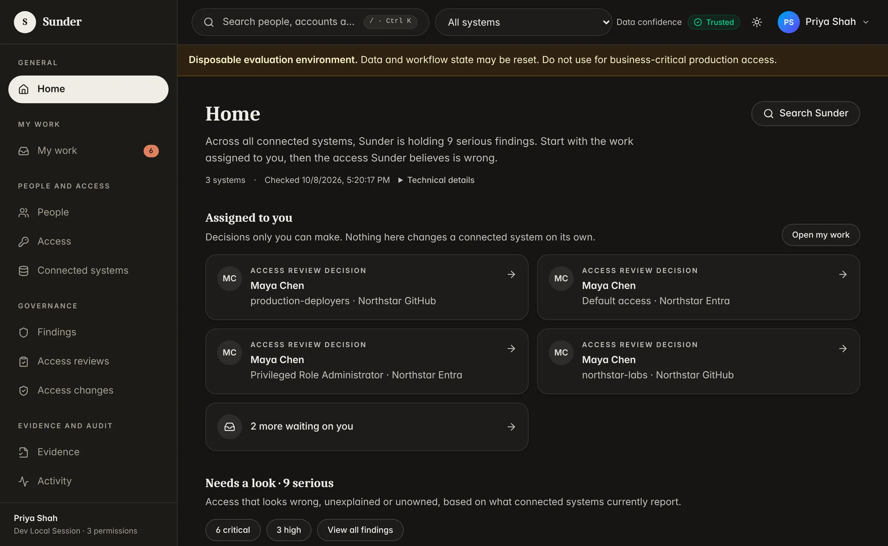
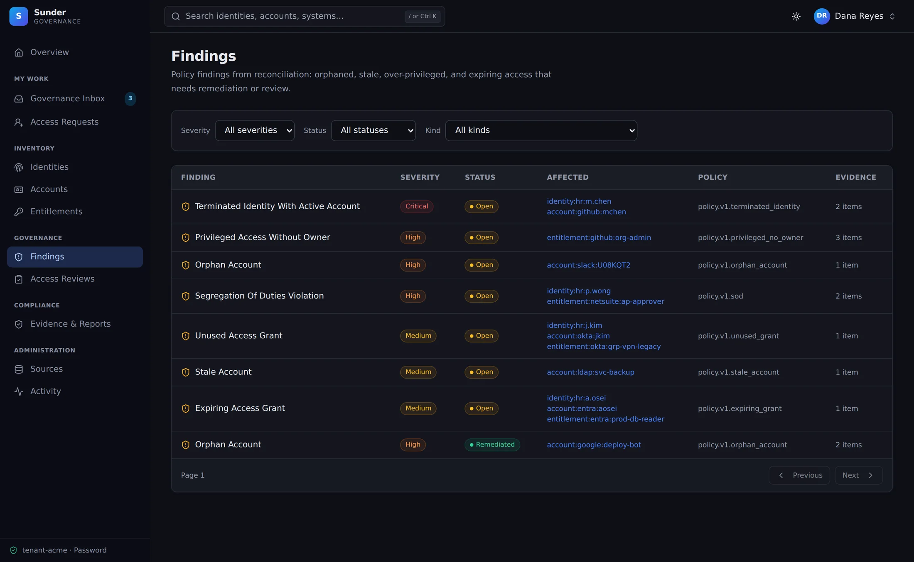
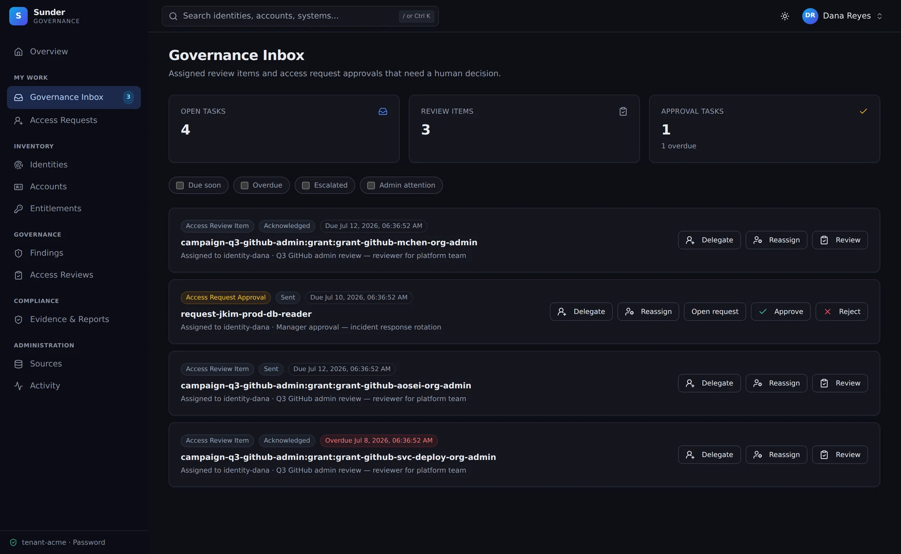

Recruiting 3–5 design partners · 60–90 day founder-led pilots
Who owns each AI agent, and what can it actually reach?
Sunder is identity governance for agent‑first companies. For every identity, human or agent, it answers three questions: who owns it, what it can actually reach, and whether a human approved it. The answers come with evidence you can hand to an auditor.
Today: HR import, GitHub and Microsoft Entra, including Entra service principals and app-role assignments. Coming: a dedicated AI agent inventory, Okta, Google Workspace and AWS. Design partners help shape it.

/ the problem
Your AI agents have access. Who owns them?
Agent-first companies create non-human identities faster than anyone reviews them: coding agents with repository write access, CI bots, service principals, internal agents with API keys. They sit next to people in GitHub teams and Entra groups. When the engineer who set one up leaves, the access often stays. A SOC 2 auditor asks the same question of both: who approved this, and is it still needed? Too often the answer lives in a spreadsheet nobody trusts.
- Ingest
- Correlate
- Detect
- Review
- Remediate
- Prove
01 / see it
Every account and grant, and what it actually reaches.
Import HR identities, connect GitHub and Microsoft Entra, and Sunder correlates accounts to people. Findings flag leavers who still have access and accounts nobody owns, each with evidence attached. Repository evidence explains what a group really grants, down to the commit, path and line, and a human confirms it before it counts.

02 / decide it
Reviews people actually complete, and removals you can prove.
Scoped access-review campaigns land as assigned tasks in each reviewer’s web inbox, My work. Every decision records who decided, why, and what they saw. When a reviewer revokes access, Sunder removes it where it can (GitHub team membership today), routes the rest to a person, and then checks that the access is really gone.

Agent owner review
who release-bot · owner m.chen has left
what github:release-team (write)
ask “Keep, reassign or revoke?”
03 / prove it
Evidence assembled as you work, not the week before the audit.
Sync summaries, findings, review decisions, rationale and removal checks accumulate as you work. Export them as a sealed evidence package your auditor can open offline, without access to Sunder. It supports SOC 2 preparation; it is not a certification.
{
"encoding_version": 1,
"campaign_id": "6f1c2a90-…",
"baseline_id": "11305c12-…",
"findings": [
["f1ba8ab5-…", "11305c12-…", "terminated_identity_retained_access",
"critical", "2026-10-01 09:02:11+00"]
],
"decisions": [
["d41e07c3-…", "11305c12-…", "revoke",
"Left 30 Sep; production access no longer needed",
"7c9e1b44-…", "fresh", "2026-10-02 09:14:03+00"]
],
…
"readable_context": { "version": 1, "selected": 6, "decided": 6, "pending": 0, … }
}Illustrative excerpt in the current evidence format, with synthetic values. The sealed package pairs this machine-readable record with CSVs, an executive report, a manifest of checksums and an offline HTML summary.
/ api & agents
Agents are governed identities. They can also be operators.
The agent inventory we are building with design partners gives each agent a named human owner, a purpose, a scope and an expiry. Your own agents can already work through Sunder today: the console, the CLI and your agents all use the same REST API. Agents can gather and prepare. People decide. No model approves or writes access.
- REST API
- Available. Governance operations as API calls, with an audit trail. Your agents use the same API as the console.
- CLI
- Available.
sunderctlcalls any API operation by its operation ID and checks your credential first. - Web inbox
- Available. My work, the web inbox for reviews and decisions. Slack delivery is coming.
- MCP server
- Coming. Agents ask governed questions and prepare requests for a person to decide.
$ sunderctl can createCanonicalSystemCollectionRun
allowed: createCanonicalSystemCollectionRun
$ sunderctl call createCanonicalSystemCollectionRun \
--path system_id=bcabf7b5-… \
--idempotency-key github-nightly-20261008 \
--data '{"collections":[]}' | jq -c '{run_id, state}'
{"run_id":"524ce70c-…","state":"queued"}
$ sunderctl call listCanonicalFindings --query severity=critical \
| jq -r '.items[] | [.severity, .subject.display_name] | @tsv'
critical Maya Chen
critical Maya Chen
…
$ sunderctl can decideCanonicalReviewItem
denied: decideCanonicalReviewItem
- canonical Human actor identity requiredReal session against Sunder’s synthetic Northstar lab, with IDs shortened and output trimmed. Tokens can gather and prepare; review decisions require a person.
Available today
- HR CSV / JSON import
- GitHub read · verified team add/remove
- Microsoft Entra read-only
GitHub covers members, teams, memberships and repositories. Microsoft Entra covers users, groups, memberships, directory roles, PIM eligibility, service principals, enterprise apps and app-role assignments. Read-only is the default pilot posture; GitHub team changes are opt-in, approved by a person, and verified after they run.
On the roadmap (not available yet)
- AI agent inventory coming
- Okta coming
- Google Workspace coming
- AWS coming
- Slack delivery coming
- MCP server coming
- Time-bound access requests coming
Design partners help set the order. Nothing moves to “available” until it ships.
/ scope, honestly
What Sunder is not.
Sunder is not an IdP, an HRIS, a SIEM, PAM, an agent runtime or a compliance-certification engine. It is not a drop-in replacement for a large IGA suite such as SailPoint. It sits above the systems you already run. Today it reads HR data, GitHub and Microsoft Entra. Okta, Google Workspace, AWS and the agent inventory are not built yet, and we will tell you plainly where a connector or workflow is not mature.
/ design partner program
We are selecting 3–5 design partners for hands-on pilots.
If you lead security or platform at an AI-native company, your agents are multiplying, and your access reviews still live in spreadsheets and screenshots ahead of SOC 2, we want to work with you. Design partners shape the agent inventory and decide which connectors come next.
-
Week 1
HR import, GitHub or Microsoft Entra connected, first correlated graph, accounts with no owner identified.
-
Weeks 2–4
Leaver and orphaned-account findings triaged, a scoped review campaign, decisions collected in the web inbox.
-
Weeks 5–8
Remediation with verification that access is gone, and a sealed evidence package checked with your security owner.
The offer
- 60–90 day founder-led pilot, weekly sessions
- HR import plus GitHub and/or Microsoft Entra
- Graph, findings, review, remediation and evidence for a defined scope
- Direct input into the agent inventory and the Okta, Google Workspace and AWS connectors
- Discounted first-year terms if success criteria are met
You are a fit if
- AI-native or agent-first company, about 50–1,000 staff
- You lead security or platform
- Running on tools like GitHub, AWS, Okta or Google Workspace, and Slack
- Preparing for SOC 2 or answering customer security reviews
- Can name owners and give weekly feedback for 6–8 weeks
A successful pilot delivers
- Correlated identity and access graph for scoped systems
- Every scoped account matched to a person, or flagged as unowned
- Completed review campaign with decision rationale
- Sealed evidence package your security owner accepts
Target success criteria, agreed per pilot, measured against your data.
/ security & compliance faq
The questions your security team will ask.
Do you replace Okta, Entra, or our HRIS?
No. Sunder sits above identity and access systems to govern visibility, reviews, evidence and remediation. It reads Microsoft Entra today; an Okta connector is on the roadmap.
Does Sunder inventory our AI agents today?
Not as a dedicated feature yet. Today Sunder reads Microsoft Entra service principals, enterprise apps and app-role assignments, and GitHub members and teams, so agents registered there show up next to people. A dedicated agent inventory, with an owner, purpose, scope and expiry for each agent, is on the roadmap, and design partners shape it.
Can we start read-only?
Yes. Read-only with manual remediation is the default pilot posture. The only automated change Sunder makes today is GitHub team add/remove: opt-in, approved by a person, audited, and verified after it runs.
Do you need production credentials?
Only customer-approved scopes for selected systems. Exports or fixtures can be used first where appropriate.
Can Sunder support auditors?
Sunder exports sealed evidence packages for the workflows it runs: review decisions, rationale, removal checks and the audit trail, which an auditor can open offline. They support SOC 2 preparation. We do not claim certified compliance outcomes.
Can AI agents change access through Sunder?
No. Your agents can call Sunder’s REST API to gather information and prepare work, and MCP support is coming. Humans keep decision authority: no model approves access or writes access changes.
What does success look like?
A correlated identity and access graph for the scoped systems, every account matched to an owner or flagged, a completed review campaign, verified removals, and a sealed evidence package accepted by your security owner.
Know who owns every agent before your auditor asks.
Tell us about your agents and AI tooling, your identity provider, your cloud and your next audit deadline. We’ll tell you honestly whether a Sunder pilot fits.
Apply for the design partner program